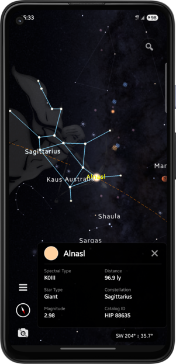
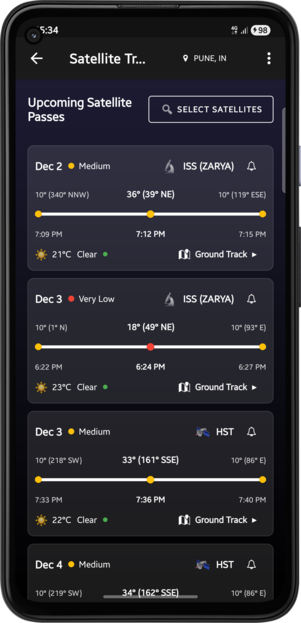
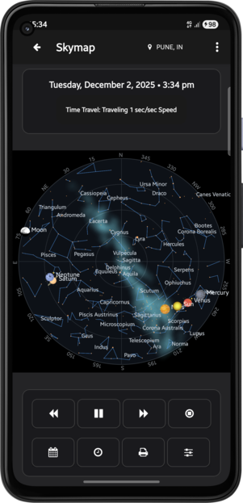
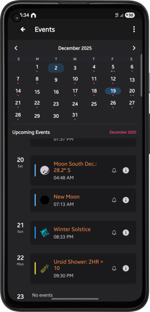
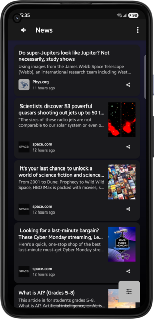
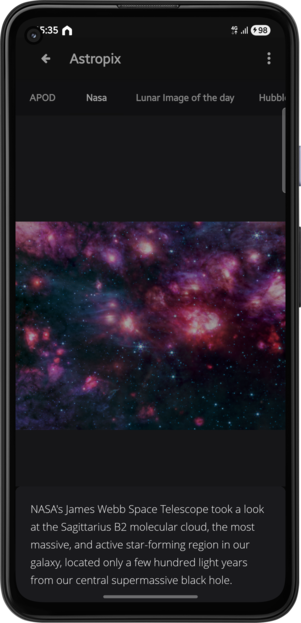
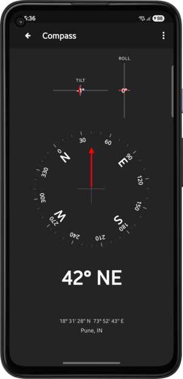

Everything you need to explore the night sky
Point your phone at the sky and see stars, planets, and constellations overlaid on your camera view. Switch between sensor mode (follows your movement) and manual mode (explore freely with touch controls). Zoom in to see deep space objects like galaxies and nebulae with stunning detail.
Track the International Space Station in real-time. Get precise predictions for visible passes with elevation, azimuth, and magnitude data. Set reminders so you never miss a spectacular ISS flyover. Watch the station's path traced across your sky view.
Explore 6,000+ stars with proper names and magnitudes. Discover all 110 Messier objects including galaxies, nebulae, and star clusters. Browse thousands of NGC deep sky objects. View 88 constellations with beautiful illustrations and connecting lines.
Search for any celestial object and get instant directions. In sensor mode, follow the directional indicator to find your target. In manual mode, the view automatically centers on the object. Tap any object to see detailed information and track its path across the sky.
See planets as 3D spheres with accurate colors and sizes. Watch the Moon display its current phase in real-time - from new moon to full moon and everything in between. Track planetary positions and conjunctions with stunning visual accuracy.
Travel through time to see how the sky changes. Watch planets move, constellations shift, and the Moon go through its phases. Perfect for planning observations or understanding celestial mechanics. See past events or preview future astronomical phenomena.
Never miss important celestial events. Get notifications for lunar phases, eclipses, equinoxes, solstices, meteor showers, and planetary conjunctions. Plan your stargazing sessions with detailed event information and optimal viewing times.
Stay updated with the latest space discoveries and missions. Browse stunning images from NASA, ESA, and other space agencies. Read curated astronomy news from trusted sources. Explore breathtaking photos of galaxies, nebulae, and cosmic phenomena.
Built-in compass for orientation. Accurate rise/set times for Sun, Moon, and planets. Real-time altitude and azimuth display. Constellation boundaries and names. All calculations based on your precise GPS location.
Toggle camera overlay on/off. Adjust zoom levels for detailed views. Switch between sensor and manual navigation modes. Show/hide constellation lines and labels. Customize your stargazing experience to match your preferences.






Clean, modern design that's easy to use even for beginners. No complicated menus - just point and explore.
Precise calculations based on your location and time. See exactly what's in the sky right now, updated every second.
Tap any object for detailed information. Discover constellation stories, planet facts, and deep space wonders.